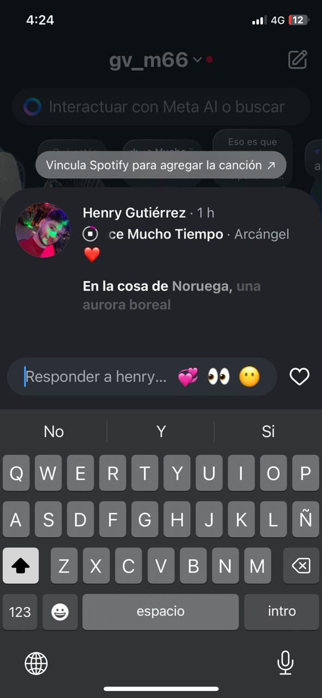
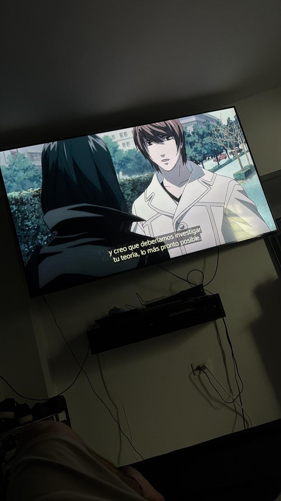
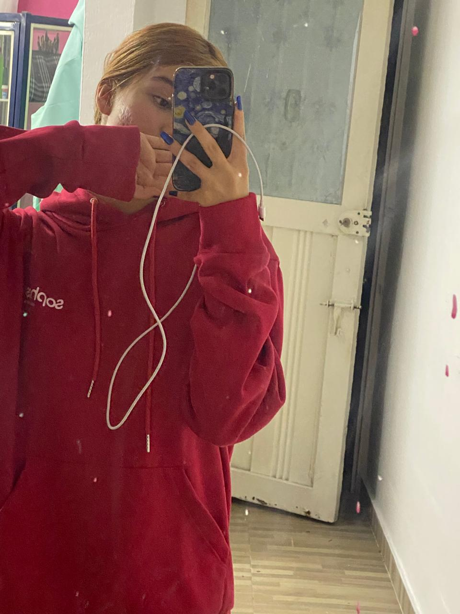
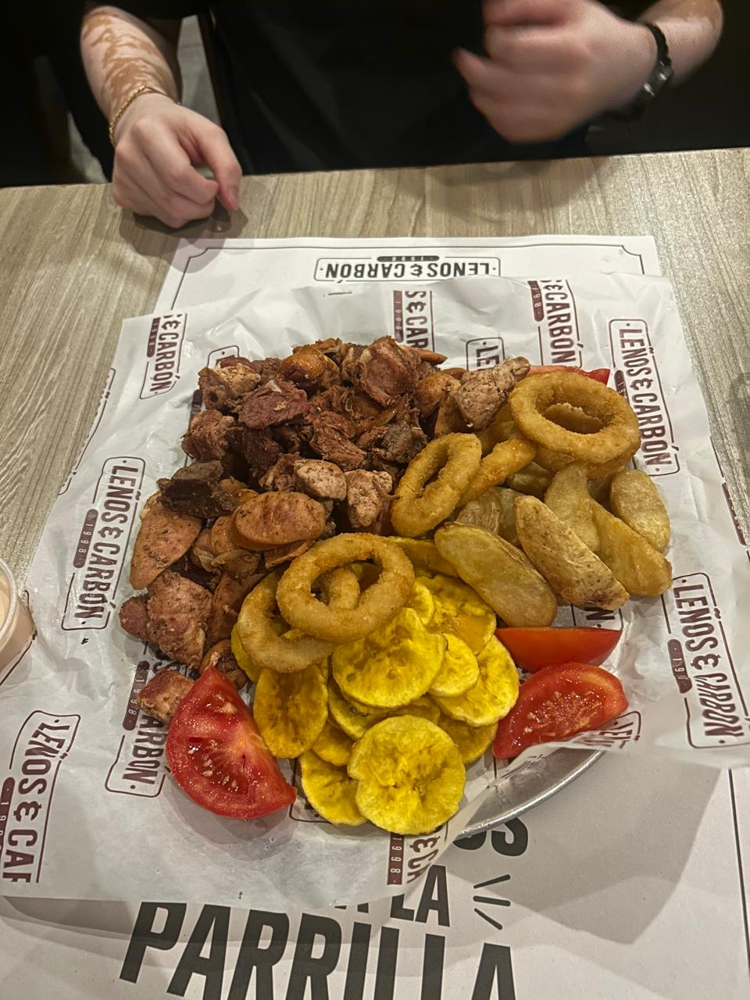

Nuestra primera salida 👣
Todavía recuerdo los nervios y la emoción de ese día. Tal vez parecía una salida cualquiera, pero para mí era el inicio de todo.

Nuestro primer paseo 🌿
No recuerdo solo el lugar, recuerdo cómo me sentía contigo ese día. La tranquilidad, las risas y esa sensación bonita de simplemente disfrutar estar juntos.

Nuestro primer concierto 🎸
Entre la música, el ruido y toda la emoción, lo que más recuerdo es haberte tenido a mi lado. Ese día se quedó guardado en mi corazón de una forma muy especial.

Nuestro primer día durmiendo fuera 🌙
Ese día se sintió como una pequeña aventura juntos. Entre conversaciones, risas y momentos tranquilos, entendí lo feliz que me hacía compartir contigo y la seguridad que me dabas con tu única presencia.

La primera canción que me dedicaste 🎵
Cada vez que la escucho recuerdo cómo me sentí ese día y la forma tan bonita en la que empezamos a conectar.

Nuestra primera serie juntos 📺
Compartir una serie contigo terminó convirtiéndose en uno de los planes que me hacen más feliz.

El primer saco que me prestaste 🧥
Dejó de ser un saco para convertirse en algo que me conectaba a ti cuando no estabas cerca.

Nuestro primer día de compras 🛍️
Aún recuerdo ese día y la pena que me daba aceptar cualquier cosa de ti. No podía creer que alguien quisiera invertir tanto en mí, consentirme y verme con tanto cariño.

Nuestra comida favorita 🍕
La comida siempre supo mejor cuando la compartía contigo. Entre conversaciones, risas y pequeños momentos, esa comida terminó convirtiéndose en algo muy nuestro.

Cuando empezamos a construir nuestro hogar 🏠
No fue solo comprar cosas o imaginar espacios. Fue empezar a soñar juntos, pensar en un lugar nuestro y construir poco a poco algo lleno de ilusión, amor y momentos que queríamos compartir.

La mejor película de amor 🎬
Siempre amaré que lo hicieras por mí.